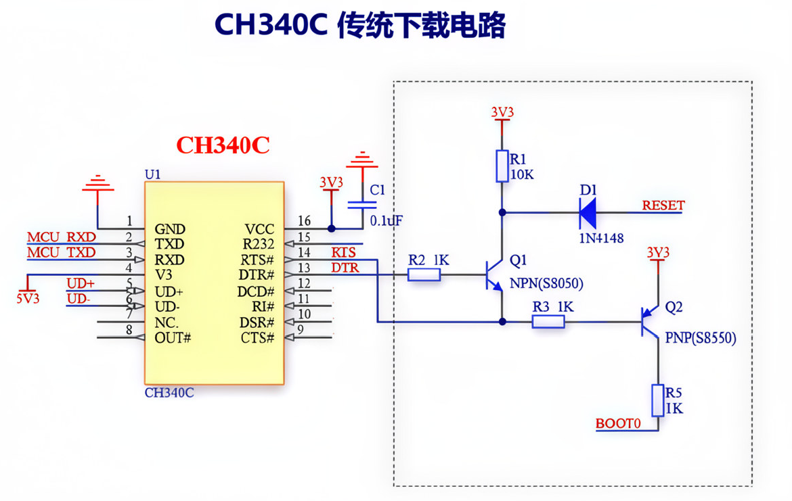
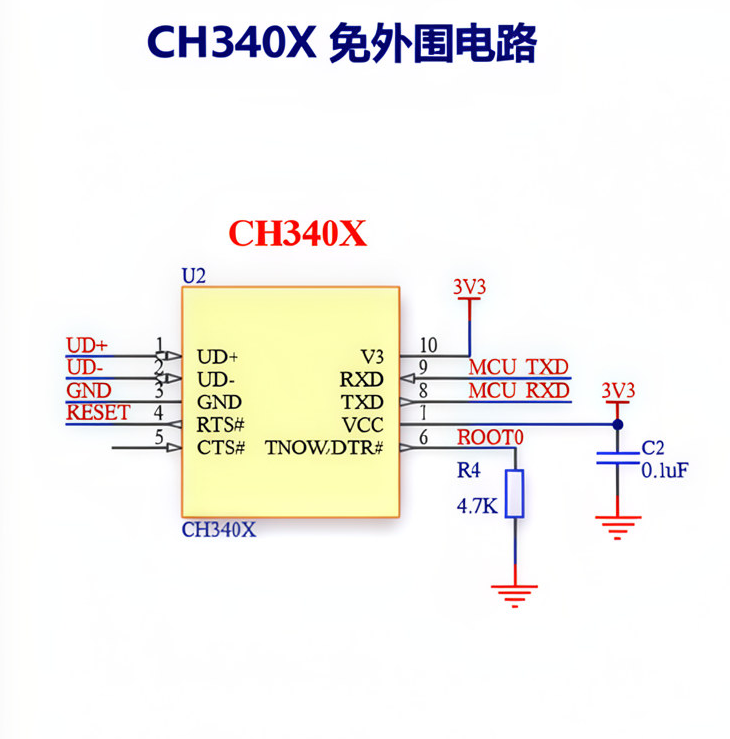

CH340C 经典电路：RTS# 经 PNP 三极管控制 BOOT0，DTR# 经 NPN 三极管控制 RESET。DTR 与 RTS 同电平时两管均截止，引脚由板载上下拉保持；DTR 低 / RTS 高时三极管导通，拉低 RESET 同时拉高 BOOT0，MCU 复位后进入 Bootloader。
CH340X 直连电路：DTR#、RTS# 不经三极管，直接连接 RESET 和 BOOT0。入口时序为先将 RTS# 置为 BOOT 有效电平，再用 DTR# 产生一个低脉冲触发 RESET，释放后 MCU 在 BOOT0 为高的状态下启动进入 Bootloader。

CH340C 经典电路

CH340X 直连电路